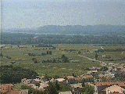
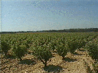

|
 シャトーヌフ・デュ・パープ からローヌ川を望む
 |
アヴィニョン近郊は有数のワインの産地だが、特に有名なのはグラン・クリュ(特級)にランク付けされる高級ワインの産地シャトーヌフ・デュ・パープだろう。 ここには教皇の築かせた城砦があり、ローヌ川に沿って広がる農園が一望できた。試飲させてくれるワインカーヴもいっぱいあるが、ローヌのパノラマを眺めながら一杯、という人にはシャトーのテラスがいいかも。ここで飲むワインの味は最高。 余談だが、旅のあいだ私たちがずっと気に入って飲んでいたのはやはりアヴィニョン近郊のタヴェルという町でできるロゼワイン。日本でも手に入るが、やはり地酒は格別おいしかった。 |